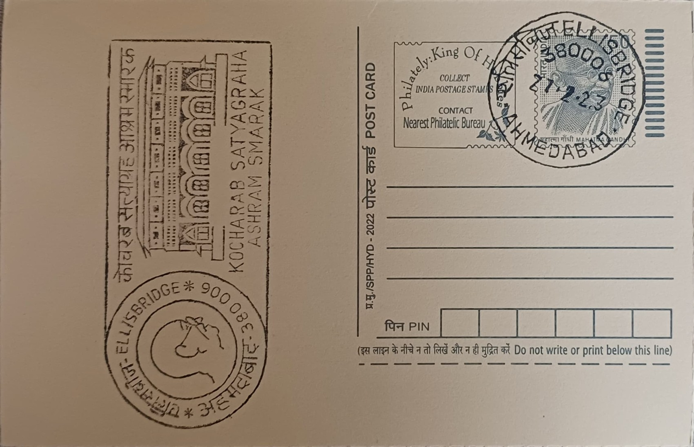

Kocharab Satyagraha Ashram Smarak
કોચરબ સત્યાગ્રહ આશ્રમ સ્મારક


The Kochrab Satyagraha Ashram traces its origin to Gandhi's return to India from South Africa in January 1915, when he sought a base from which to resume communal and political life in his native Gujarat. The site chosen was a bungalow at Kochrab, then a quiet suburb on the edge of Ahmedabad near present-day Ellisbridge, made available on rent by the barrister Jivanlal Desai. The ashram was formally established on 25 May 1915 under the name Satyagraha Ashram, with an initial community of about twenty-five men, women, and children who shared a common kitchen and bound themselves to vows of truth, nonviolence, celibacy, and manual labour, directly carrying over the disciplines Gandhi had practised at Phoenix Settlement and Tolstoy Farm in South Africa.
As the first ashram Gandhi founded on Indian soil, Kochrab occupies a foundational place in the history of the Indian freedom movement, distinct from the far better documented Sabarmati Ashram that superseded it. It was here that Gandhi began translating the Satyagraha philosophy he had tested in South Africa into an Indian idiom, training a small resident community in self-reliance, inter-caste living, and service as preparation for wider civil resistance. The site's significance is chiefly historical and commemorative rather than architectural: it is preserved today as a Smarak, or memorial, recognised as the seed institution from which both Sabarmati Ashram and Gandhi's subsequent public career in India grew.
The defining episode of the Kochrab years came within months of founding, when the reformer Amritlal Thakkar wrote to Gandhi asking whether a Dalit family, Dudabhai, his wife Danibehn, and their infant daughter Lakshmi, could be admitted as full members. Gandhi accepted them on the condition that they abide by the ashram's common rules, a decision that provoked sharp objections from orthodox Hindu donors and relatives of ashram members, some of whom withdrew financial support almost immediately. The ashram was left with barely a month's reserves before the Ahmedabad industrialist Ambalal Sarabhai stepped in with a donation of around thirteen thousand rupees, allowing the community to survive the crisis and setting an early precedent for Gandhi's insistence on caste equality within his institutions.
Gandhi and his followers remained at Kochrab for roughly two years, using the modest rented premises as a training ground even as the arrangement proved increasingly unworkable: the bungalow could not accommodate the growing community, lacked room for expansion into agriculture and crafts, and sat close enough to the town to expose its children to recurring outbreaks of disease. An outbreak of plague in the surrounding village in 1917 brought matters to a head, and Gandhi later wrote that the danger to the ashram's children was reason enough to leave the site altogether. On 17 June 1917 the community relocated to open land on the banks of the Sabarmati river, a move that gave rise to the much larger and more widely known Sabarmati Ashram.
The original bungalow site at Kochrab has since been developed into a dedicated memorial and museum complex administered under the Gandhi Ashram Preservation and Memorial Trust alongside the Gandhi Heritage Portal, with a renovation and redevelopment of the campus into an expanded museum completed in 2024 to display photographs, personal artefacts, and documentary material from Gandhi's early Ahmedabad years. The memorial draws a steady stream of students, researchers, and heritage tourists who visit it in conjunction with Sabarmati Ashram as part of a fuller itinerary of Gandhi-related sites in the city. Comparatively modest beside its riverside successor, the Kochrab Smarak nonetheless functions as the documented starting point of that larger Gandhian institutional history, and its postal association with Ellisbridge keeps that early chapter attached to a specific, locatable address in present-day Ahmedabad.
| Date of Introduction | January 30, 1998 |
|---|---|
| Address | Sub Postmaster, |
| Ellisbridge SO, | |
| Ahmedabad (dt.), Gujarat - 380006. |